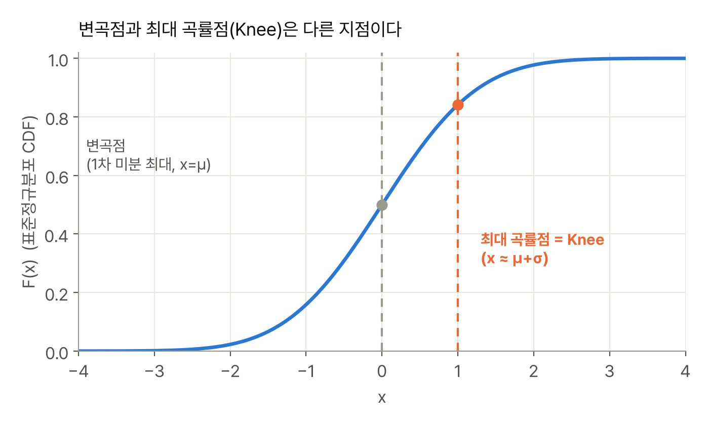
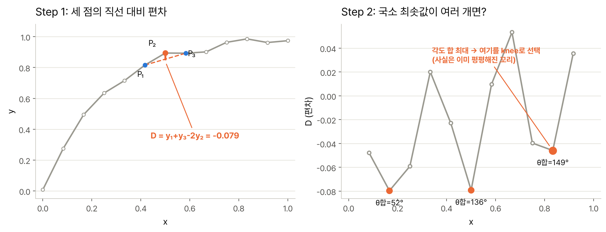
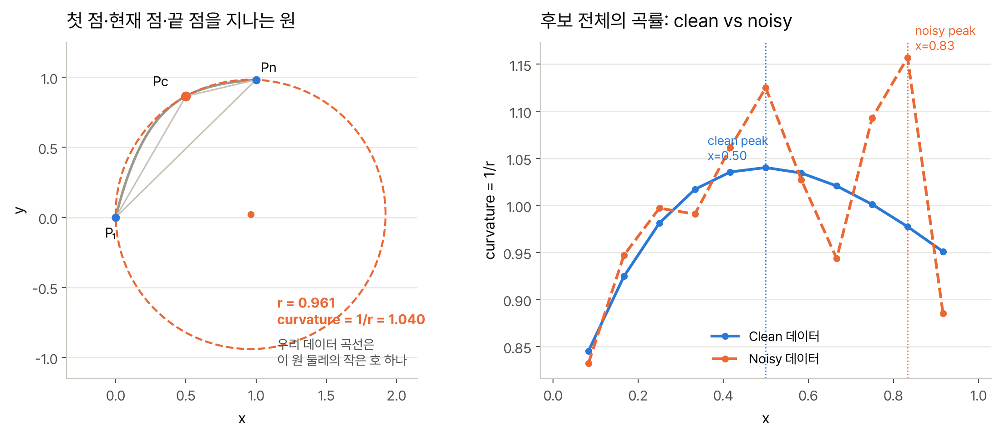
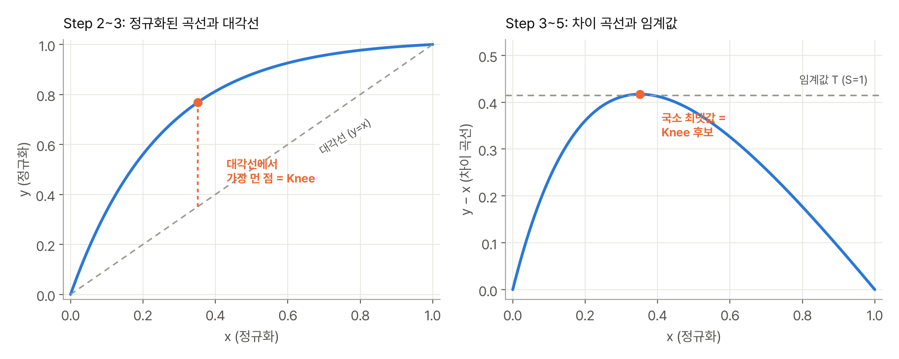

Kneedle Algorithm
오늘 배운 것
Knee(꺾이는 지점)를 “감으로 정하는 것"이 아니라 곡률(curvature)의 수학적 정의로 formalize하고, 곡률이 정의되지 않는 이산(discrete) 데이터에서 이를 근사하는 6단계 알고리즘(Kneedle)을 정리했다.
핵심 개념 정리
1. Knee의 수학적 정의: 곡률(Curvature)
논문이 지적하는 문제는, “knee/elbow"라는 개념이 널리 쓰이는데도 합의된 정의가 없었다는 것이다. 대부분의 연구는 knee를 비용-편익 분석의 대용품으로 암묵적으로 쓸 뿐, 정확히 무엇을 “knee"라고 부르는지 명시하지 않는다. 논문은 연속함수 \(f\)에 대해 이미 잘 정의되어 있는 곡률을 knee의 정의로 채택한다.
$$ K_f(x) = \frac{f''(x)}{(1 + f'(x)^2)^{1.5}} $$Knee는 이 곡률 \(K_f(x)\)가 최대가 되는 점이다. 이 정의가 좋은 이유는 (i) 시스템/파라미터에 종속되지 않고(application-independent), (ii) 사람이 직접 임계값을 정할 필요가 없다는 점이다.
1-1. 왜 1차 미분(변곡점)이 아니라 2차 미분 기반 곡률인가?
논문은 표준정규분포 CDF를 예로 든다. 이 곡선의 변곡점(1차 미분이 최대인 점, 즉 기울기가 가장 가파른 점)은 평균 \(\mu\)에서 발생하지만, 이 지점 이후로도 성능(CDF 값)은 계속 유의미하게 증가한다 — 즉 변곡점은 “여기서부터 더 좋아지는 게 거의 없다"는 knee의 직관과 맞지 않는다. 반면 곡률이 최대가 되는 지점은 \(\mu + \sigma\) 근처로, 직선에서 가장 많이 휘어지는 지점이라는 knee의 직관과 정확히 일치한다.

2. 문제: 이산 데이터에서는 곡률이 정의되지 않는다
곡률은 연속함수를 전제로 한 정의라서, 시스템 로그처럼 흩어진 이산 데이터 점들에는 그대로 적용할 수 없다. 연속 함수를 데이터에 피팅한 뒤 그 함수의 최대 곡률점을 구하는 방법도 있지만, 데이터가 노이즈가 있으면 피팅 자체가 어렵고, 피팅된 함수의 최대 곡률점이 데이터의 유효 범위를 벗어날 수도 있다.
논문은 기존 이산 knee 탐지 방법 두 가지의 한계를 짚는다.
2-1. Angle-based: 세 점의 직선 대비 편차로 꺾임을 재기
연속된 세 점 \((x_1,y_1),(x_2,y_2),(x_3,y_3)\)에서 다음 값을 계산한다.
$$ D = y_1 + y_3 - 2y_2 $$x가 등간격이면 이 식은 이산 2차미분의 근사식과 같은 꼴이다 — 즉 “가운데 점 \(P_2\)가 양 옆 점을 잇는 직선에서 얼마나 벗어나 있는가"를 재는 국소 곡률의 대용치다. 곡선이 위로 오목(concave)하면 \(P_2\)가 직선보다 위에 있으므로 \(D\)는 음수이고, 더 깊이 파인(더 음수인) 지점일수록 국소적으로 더 많이 꺾여 있다는 뜻이다. 그래서 \(D\)의 국소 최솟값들을 knee 후보로 모은다.

문제는 그다음이다. 후보가 여러 개면, 각 후보에서 이전 점·다음 점으로 향하는 두 벡터가 **y축(수직축)**과 이루는 각도 \(\theta_1,\theta_2\)를 재고 그 합이 가장 큰 후보를 최종 knee로 고른다. 위 그림의 예시(노이즈 섞인 13개 점)로 직접 계산해보면:
| 후보 x | D (편차) | θ₁+θ₂ |
|---|---|---|
| 0.17 | -0.080 | 52° |
| 0.50 | -0.079 | 136° |
| 0.83 | -0.046 | 149° (선택됨) |
직관적으로 곡선이 가장 급하게 휘는 지점은 x≈0.5 부근인데(D 값도 -0.079로 x≈0.17과 비슷하게 깊다), 각도 합 기준으로는 이미 곡선이 평평해진 꼬리 구간(x≈0.83)이 이긴다. 그 지점에서는 양쪽 이웃으로 향하는 벡터가 둘 다 거의 수평이라 y축과 크게 벌어져 있기 때문이다 — “많이 꺾인 곳"이 아니라 “이미 평평한 곳"에서 오히려 각도 합이 커지는 역설이 생긴다. 세 점만 보는 국소 지표라서, 그 지점이 곡선 전체에서 어떤 의미를 갖는지는 반영하지 못한다는 논문의 지적이 정확히 이 현상이다. (오프라인 전용인 이유도 같은 맥락: 여러 국소 최솟값의 각도 합을 서로 비교해야 하므로, 데이터가 끝까지 들어와야 최종 판정을 내릴 수 있다.)
2-2. Menger curvature: 세 점을 지나는 원의 곡률
평면 위의 세 점을 지나는 원은 하나뿐이다. Menger curvature는 그 원의 반지름 \(r\)의 역수를 곡률로 정의한다.
$$ \text{curvature} = \frac{1}{r} = \frac{4 \cdot \text{Area}(\triangle P_1 P_c P_n)}{|P_1P_c|\cdot|P_cP_n|\cdot|P_nP_1|} $$이 논문이 다루는 변형은, 이 세 점을 이웃한 점이 아니라 데이터 전체의 첫 점 · 현재 점 \(P_c\) · 끝 점으로 고정한다는 것이다 — 즉 후보 점을 바꿔가며 매번 첫 점·끝 점과 만드는 원이 달라진다.

같은 13개 점으로 계산해보면, clean 데이터에서는 곡률이 x=0.50 부근에서 매끄러운 단일 봉우리를 이루며 직관적인 knee 위치와 일치한다. 그런데 아주 작은 노이즈만 더해도 곡률이 들쭉날쭉해지고, 최댓값의 위치 자체가 x=0.83으로 옮겨간다 — 앞의 angle-based 예시가 흔들린 지점과 같다. 첫 점·끝 점이 고정된 채 세 변의 길이와 삼각형 면적을 곱셈·나눗셈으로 섞는 식이라, 데이터의 작은 흔들림이 (특히 세 점이 거의 일직선에 가까워 삼각형 면적이 작을 때) 비율 오차로 크게 증폭되기 때문이다. 연속 함수를 잘 근사하는 이상적인 데이터에는 잘 맞지만, 실제 컴퓨팅 시스템의 노이즈 있는 온라인 데이터에는 잘 안 맞는다는 논문의 지적(Section IV 실측 비교)은 이런 뜻이다.
두 방법 모두 결국 “몇 개의 개별 점 값"에 의존해서 knee를 판정한다는 공통점이 있다 — angle-based는 매번 바뀌는 이웃 3점을, Menger는 고정된 첫·끝 점과 현재 점 3개를 본다. 곡선 전체의 경향이 아니라 국소적인 몇 개 점에 기대는 방식이라, 노이즈에 흔들리는 양상은 다르지만 결국 비슷한 약점으로 귀결된다.
(EWMA도 있지만 온라인 전용이고, knee의 위치를 직접 알려주지 않고 “knee를 지나쳤는지"만 판정한다는 점에서 접근 자체가 다르다.)
3. Kneedle 알고리즘 6단계
Kneedle의 핵심 아이디어는, 곡선을 \((x_{\min},y_{\min})\)과 \((x_{\max},y_{\max})\)를 잇는 직선 기준으로 봤을 때 그 직선에서 가장 많이 벗어나는 점이 이산 데이터에서의 최대 곡률점(knee)을 근사한다는 것이다.
이 직선은 일종의 “기준선” 역할을 한다. 만약 곡선이 처음부터 끝까지 이득 체감 없이 균일하게 늘어났다면, 정확히 이 직선 모양이었을 것이다. 실제 곡선이 이 직선보다 위로 볼록하게 튀어나온 정도가 클수록, 그 지점은 “균일한 증가"라는 이상적인 상황에서 가장 크게 벗어난 지점 — 즉 이득이 급격히 줄어들기 시작하는 지점이라고 볼 수 있다. 그래서 직선에서 가장 멀리 떨어진 점을 knee 후보로 삼는다(구체적인 계산은 아래 Step 3~4에서 다룬다).
그런데 왜 하필 첫 점과 끝 점만 이어서 만든 직선을 쓸까? 데이터를 가장 잘 대표하는 직선을 구하고 싶다면 보통 최소제곱(least-squares) 회귀직선을 떠올리기 쉽다. 하지만 최소제곱 직선은 모든 점과의 거리 제곱합이 최소가 되도록 정해지는 직선이라는 점이 여기서는 오히려 문제가 된다 — 점이 특정 구간에 많이 몰려 있으면, 그 구간의 점들이 전체 오차합에 더 많이 기여하기 때문에 직선이 그쪽으로 더 세게 끌려간다(점 하나하나가 “이 근처로 지나가라"고 투표하는 셈인데, 표가 많은 구간이 이기는 것과 비슷하다).
문제는 knee가 있는 구간, 즉 곡선이 급격히 휘는 구간일수록 실측 데이터가 촘촘하게 몰려 찍히는 경우가 흔하다는 것이다(변화가 큰 구간일수록 더 자주 관측·기록되는 경우가 많으니까). 그러면 최소제곱 직선이 바로 그 몰려 있는 구간에 바짝 붙어서 지나가게 되고, 정작 knee가 있는 그 자리에서 직선-곡선 사이의 거리(편차)가 오히려 작아져 버린다. 편차가 작아지면 “가장 많이 벗어난 점"이라는 신호 자체가 약해지거나 사라지는 셈이니, 최소제곱 직선을 기준으로 삼으면 knee를 놓치거나 엉뚱한 곳을 짚을 위험이 커진다 — 이게 “점이 몰려 있는 곡선 중간부가 끝점보다 과대 대표되어 knee를 잘라먹을 위험이 있다"는 말의 뜻이다.
반면 첫 점과 끝 점만 잇는 직선은 중간에 점이 몇 개가 있든, 어디에 얼마나 몰려 있든 전혀 영향을 받지 않는다 — 오직 시작값과 끝값, 이 두 개로만 정해지기 때문이다. 그래서 데이터의 분포가 어떻든 knee 지점에서의 편차가 항상 온전하게 보존된다. 예를 들어 점 10개 중 8개가 knee 근처에 몰려 찍혀 있다고 해도, 최소제곱 직선은 그 8개에 맞추려고 그쪽으로 휘어들어가지만 (그래서 그 근처에서의 편차를 깎아먹지만), 끝점 직선은 그 8개가 어디에 있든 전혀 상관없이 고정이다.
- 스무딩: 원본 데이터에 스무딩 스플라인을 적용해 노이즈를 줄인 곡선 \(D_s = \{(x_{s_i}, y_{s_i})\}\)을 얻는다.
- 정규화: 데이터의 스케일에 알고리즘이 영향받지 않도록, x·y 값을 각각 단위 정사각형(0~1 범위)으로 정규화한다. $$ x_{sn_i} = \frac{x_{s_i} - \min\{x_s\}}{\max\{x_s\} - \min\{x_s\}}, \qquad y_{sn_i} = \frac{y_{s_i} - \min\{y_s\}}{\max\{y_s\} - \min\{y_s\}} $$
- 차이 곡선(difference curve): 대각선 \(y=x\)로부터 각 점이 얼마나 떨어져 있는지를 계산한다. $$ x_{d_i} = x_{sn_i}, \qquad y_{d_i} = y_{sn_i} - x_{sn_i} $$
- 국소 최댓값 찾기: 차이 곡선의 국소 최댓값들이 knee 후보 \(D_{lmx} = \{(x_{lmx_i}, y_{lmx_i})\}\)다 — 차이 곡선이 커진다는 건 원곡선이 대각선보다 위로 볼록하게 튀어나온다는 뜻이고, 그게 국소적으로 최대가 되는 지점이 대각선에서 가장 멀어지는 지점이다.
- 임계값 계산: 각 knee 후보에 대해, 연속된 x-값 사이의 평균 간격에 민감도 파라미터 \(S\)를 곱한 만큼을 그 후보의 y-값에서 뺀 임계값을 정한다. $$ T_{lmx_i} = y_{lmx_i} - S \cdot \frac{\sum_{i=1}^{n-1}(x_{sn_{i+1}} - x_{sn_i})}{n-1} $$ \(S\)가 작을수록 임계값이 후보값에 가까워 더 공격적으로(빨리) knee를 선언하고, \(S\)가 클수록 더 보수적으로(오래 지켜본 뒤) 선언한다.
- 확정 판정: 다음 국소 최댓값에 도달하기 전에, 어떤 차이값 \((x_{d_j}, y_{d_j})\; (j>i)\)가 이 임계값 \(T_{lmx_i}\) 아래로 떨어지면, \(x = x_{lmx_i}\)를 knee로 확정한다. 반대로 임계값에 도달하기 전에 차이 곡선이 국소 최솟값을 찍고 다시 증가하기 시작하면, 그건 진짜 꺾임이 아니라 일시적 요동이었다는 뜻이므로 임계값을 0으로 리셋하고 다음 국소 최댓값을 기다린다.
이 절차는 오프라인(전체 데이터를 한 번에)과 온라인(점이 들어올 때마다) 둘 다에 쓸 수 있고, 온라인일 때는 이미 확정한 knee를 이후 데이터로 정정할 수도 있다. n개 점에 대한 최악 실행시간은 \(\sum_{i=1}^n i = O(n^2)\)이다.

|
|
4. EPTQ가 실제로 쓴 건 이 알고리즘의 간소화 버전
EPTQ 논문(4.3절)의 수식을 Kneedle의 6단계와 대응시켜보면 다음과 같다.
$$ x_k = \frac{k-1}{K-1}, \qquad y_k = \frac{\log s_k - \log s_K}{\log s_1 - \log s_K}, \qquad k^* = \arg\max_k \big[(1-x_k) - y_k\big], \qquad \tau = s_{k^*} $$- \(x_k = (k-1)/(K-1)\)은 Kneedle Step 2의 x-정규화와 정확히 같은 역할 (순위 \(k\)를 0~1 범위로 정규화).
- \(y_k\)도 Step 2의 y-정규화와 같은 역할이지만, EPTQ는 원 논문에 없는 로그 스케일을 추가로 적용했다 — importance score \(s_k\)가 heavy-tailed 분포(논문 Figure 4)라서, 로그를 취해야 정규화된 곡선이 스케일 차이에 덜 휘둘린다.
- \((1-x_k) - y_k\)는 Step 3(차이 곡선, \(y_{sn}-x_{sn}\))과 같은 역할(“자기 자신의 두 끝점을 잇는 직선으로부터의 편차”)을 하는데, 부호/축이 다르다. EPTQ의 importance score는 내림차순 정렬(\(s_1 \ge \cdots \ge s_N\))이라 \((x_k, y_k)\)는 \((0,1)\)에서 \((1,0)\)으로 감소하는 곡선이다 — 즉 이 곡선 자신의 시작점·끝점을 잇는 직선 자체가 \(y=x\)가 아니라 \(y=1-x\)이고, 그 직선으로부터의 수직 편차가 정확히 \((1-x_k)-y_k\)다(heavy-tailed 분포라 곡선이 이 직선 아래로 볼록하게 처지므로 이 값은 양수이고, 가장 많이 처지는 지점의 argmax가 knee다). 원 논문이 Section III에서 언급하는 거울 대칭 트릭(“curves with consistently positive concavity… invert… replacing \(y_i\) with \(y_{\max}-y_i\) and \(x_i\) with \(x_{\max}-x_i\)")은 이것과는 다른 케이스(증가하는 볼록 곡선, elbow)를 위한 것이라 EPTQ가 그 트릭을 그대로 쓴 건 아니고, 같은 원리(“끝점을 잇는 직선에서 가장 먼 점”)를 감소 곡선에 맞게 직접 다시 유도한 것에 가깝다.
- \(k^* = \arg\max_k[\cdot]\)은 Step 4(국소 최댓값 찾기)에 대응하지만, EPTQ는 전역 argmax 하나만 취한다. Step 1(스무딩)과 Step 5~6(임계값 \(T\), 민감도 \(S\), 온라인 재확인 로직)은 아예 등장하지 않는다.
즉 EPTQ는 이미 정렬되어 단조로운 곡선(및 상위 \(K\)개로 미리 잘라낸 구간)을 다루기 때문에, 노이즈가 섞인 실시간 스트림을 전제로 한 원 논문의 스무딩·다중 후보·온라인 임계값 로직이 필요 없다 — “국소 최댓값 중 진짜를 걸러내는” 문제 자체가 애초에 없어서, Kneedle의 핵심 아이디어(대각선에서 가장 먼 점)만 가져오고 나머지 안정성 장치는 걷어낸 셈이다.
헷갈렸던 부분
- 처음엔 knee를 그냥 “1차 미분이 큰 지점"으로 뭉뚱그려 이해하고 있었는데, Gaussian CDF 예시를 보고서야 변곡점(1차 미분 최대)과 최대 곡률점(2차 미분 기반)이 다른 지점이라는 걸 명확히 했다. knee는 후자다.
- Step 5의 임계값 \(T\)가 “얼마나 참을성 있게 knee를 확정할지"를 조절하는 파라미터라는 걸 처음엔 놓쳤다 — \(S\)가 민감도가 아니라 정확히는 “이 정도 평평한 구간을 봐야 확정한다"는 여유값에 가깝다.
- 논문 Section IV-D에 따르면 오프라인 최적 \(S\)는 0인데(완전한 정보가 있으니 공격적으로 판단해도 됨), 온라인 최적 \(S\)는 1이라고 한다 — 왜 온라인에서는 좀 더 보수적인 값이 필요한지에 대해서는 아직 안 들어온 데이터에 대한 불확실성 때문일 것이라 추측하고 있다.
확인 질문
Knee를 정의할 때 왜 1차 미분(변곡점)이 아니라 곡률(2차 미분 기반)을 쓰는가?
변곡점은 곡선의 기울기(1차 미분)가 최대인 지점일 뿐이라, 그 이후로도 성능이 계속 유의미하게 좋아질 수 있다(표준정규분포 CDF의 변곡점은 평균 \(\mu\)이지만, 그 뒤로도 값이 계속 늘어난다). Knee가 담고자 하는 직관은 “직선에서 가장 많이 벗어나는 지점”, 즉 “여기부터는 더 좋아져 봤자 한계효용이 줄어드는 지점"이고, 이건 1차 미분이 아니라 곡률(\(K_f(x) = f''(x)/(1+f'(x)^2)^{1.5}\))이 최대인 지점과 정확히 일치한다.
Kneedle의 Step 5~6에 있는 임계값(threshold) 로직은 왜 필요한가?
Step 4에서 찾은 차이 곡선의 국소 최댓값은 노이즈 때문에 여러 개 생길 수 있는데, 그중 어떤 게 “진짜” knee인지 바로 알 수 없다. 임계값 \(T_{lmx_i}\)는 “이 후보를 knee로 확정하려면, 다음 국소 최댓값이 오기 전에 차이값이 이만큼 떨어지는 걸 봐야 한다"는 확인 절차다. 만약 확정되기 전에 차이 곡선이 다시 올라가기 시작하면(국소 최솟값을 찍고 반등하면) 그건 일시적 요동으로 보고 후보를 취소한다. 이 로직 덕분에 노이즈가 있는 온라인 스트림에서도 오탐을 줄일 수 있다.
EPTQ가 Kneedle을 그대로 안 쓰고 어떻게 간소화했는가?
EPTQ는 이미 내림차순으로 정렬된 상위 \(K\)개 importance score만 다루므로, 데이터가 단조롭고 노이즈에 대한 별도 스무딩이 필요 없다. 그래서 Kneedle의 정규화(Step 2)와 차이 곡선(Step 3) 아이디어만 가져오되(로그 스케일을 추가로 적용), 국소 최댓값 중 진짜를 걸러내기 위한 임계값·민감도·온라인 재확인 로직(Step 5~6)은 걷어내고 전역 argmax 한 번으로 knee(임계값 \(\tau\))를 정한다. “여러 knee 후보 중 뭐가 진짜인지 가려낸다"는 원 논문의 문제 자체가, 이미 정렬된 단조 곡선에는 해당하지 않기 때문이다.
참고 자료
- Ville Satopää, Jeannie Albrecht, David Irwin, Barath Raghavan. “Finding a ‘Kneedle’ in a Haystack: Detecting Knee Points in System Behavior.” 31st International Conference on Distributed Computing Systems Workshops (ICDCS Workshops), IEEE, 2011. PDF